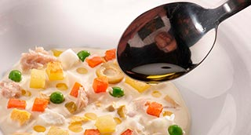

MiniPizza frita: Tomate, Albahaca y Mozzarella. Tomate, Mató y Anchoas
"Patatas, Zanahorias, Guisantes, Mahonesa"

| Gelé de Zanahoria | |
|---|---|
| Zumo de zanahoria | 250 ml. |
| Hojas de gelatina | 3 un. |
| Sopa de guisantes | |
| Guisantes | 200 gr. |
| Chalota | 1 un. |
| Agua mineral | 400 ml. |
| Allioli | 1 c.s. |
| Sal | 1 c.m. |
| Puré de patata y atún | |
| Patatas | 500 gr. |
| Mahonesa | 100 gr. |
| Atún en conserva | 50 gr. |
| Sal | 1 pz. |
| Complementos | |
| Huevos de codorníz | 6 un. |
| Ventresca de atún | 6 un. |
| Hierba fresca | 6 un. |
-
Gelé de zanahoria
- Poner las hojas de gelatina en remojo.
- Calentar 50 ml. de zumo de zanahoria y disolver las hojas de gelatina remojadas y escurridas.
- Mezclar con el resto de zumo de zanahoria y rectificar de sal.
- Colocar dentro de moldes circulares de 5 cm. de ø. Colocar en la nevera para que solidifiquen. Sopa de guisantes
- En un cazo poner a hervir el agua mineral y la sal junto la chalota.
- Echar los guisantes cuando levante el hervor. Dejar cocer 1 min.
- Escurrir guardando el agua de cocción.
- En un procesador triturar los guisantes la chalota y 50 ml. del agua de cocción. Triturar y pasar por un colador fino.
- Mezclar con el allioli con la ayuda de unas varillas, rectificar de sal, volver a colar y guardar en frío. Puré de patatas y atún
- Poner a hervir las patatas con la piel añadiendo sal al agua.
- Una vez cocidas y aún templadas pelarlas y pasarlas por el pasapurés.
- Triturar con el túrmix la mayonesa y el atún hasta obtener una salsa fina.
- Mezclar con el puré de patatas, rectificar de sal e introducir en una manga con boquilla acanalada. Reservar en frío. Complementos
- Hervir los huevos de codorníz 4 min. refrescar pelar y reservar.
- Cortar 6 filetes de la ventresca en conserva.
- Colocar las hierbas en un bol con agua fría y hielo. Acabado/Presentación
- En un plato sopero colocar un fondo de crema de guisantes.
- Desmoldar la gelatina de zanahoria y disponerla en el centro de la crema de guisantes.
- Dibujar encima de la gelatina uno o varios rosetones de puré de patata.
- Decorar con los huevos de codorníz, el filete de ventresca y un ramito de hierba fresca o brotes.
- Servir inmediatamente.